Air Canada mobile app
Native iOS & Android • Product Strategy • UX/UI Design
Timeline
Nov 2025 – Apr 2026
Skills
UX Research
User Flows
Information Architecture
Information Hierarchy
Contextual States
Native Mobile UI
Product Strategy
Tools
Figma
FigJam
Figma Make
Google Surveys
Adobe Analytics
Jira
MS Teams
Role
Senior / Lead Product Designer
The Opportunity —
Air travel is dynamic. What a customer needs before a trip is different from what they need at the airport, during boarding, in flight, on a connection, or after they land.
Home on the Air Canada native app was still a relatively fixed destination. Relevant trip details (flight status, gate, boarding, connection, baggage, the next action) lived across the product. Customers had to know where to look.
The opportunity was to make Home less of a navigation hub and more of a travel companion: a real-time itinerary that updates the current flight and layovers, and a contextual snippet that points to what matters now.
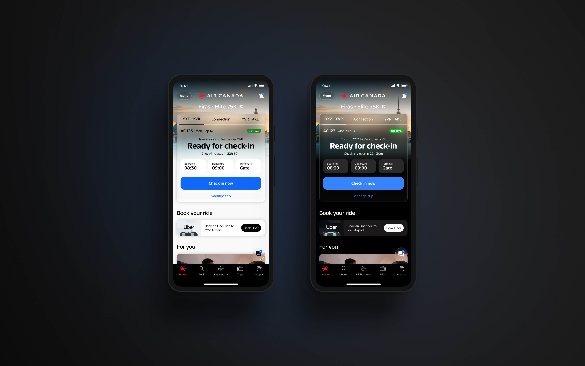
HERO: FINAL HOME SCREENMy Role
I led the product design and conducted UX research for the Day of Travel experience on Home, shaping how Home adapts across different moments of the customer journey.
My work spanned contextual states, information hierarchy, flight and connection experiences, messaging, interaction design, edge cases, detailed UI, and implementation considerations.
I worked closely with Product, Engineering, and QA throughout the process, iterating as we balanced customer needs, product goals, technical constraints, research insights, and feedback from multiple stakeholders.
The Shift —
Home should move with the customer. Air travel changes constantly, and the digital experience should adapt with it.
The question used to be: what information can we show? The new question is more focused: what does this customer need to know or do right now?
That shifts the experience from navigation to anticipation. Instead of opening Home, searching for information, and moving through the app to find what they need, customers open Home and see the context that matters most in that moment: their status, gate, boarding, next segment, or next action.
When the product understands the context, customers spend less time figuring out where to go and more time simply getting where they need to be.
10 Contextual States —
A system, not a set of screens
The redesigned Home experience is built around ten contextual travel states. It keeps the customer’s itinerary up to date in real time, adapting the current flight and connection details without requiring them to navigate elsewhere.
A conversational snippet brings the most relevant detail to the surface for each moment. The five screens below represent core travel moments, not the full set of ten.
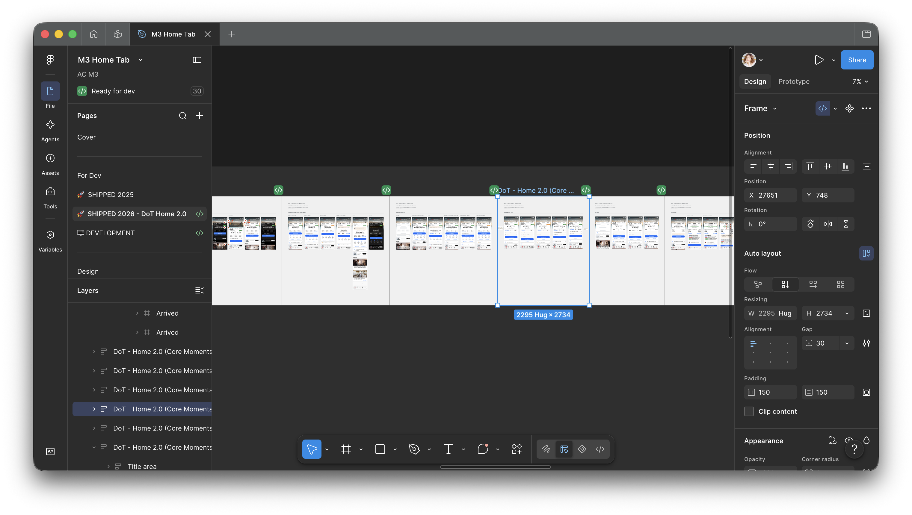
10 JOURNEY STATES: OVERVIEWFive Core Moments —
These five Homes show the system stepping forward as the trip does. Same surface. Different priority.
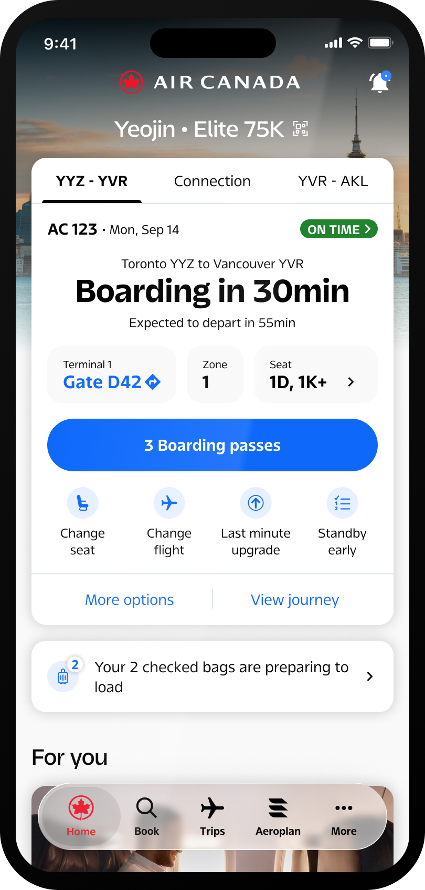
PRE-BOARDING SCREEN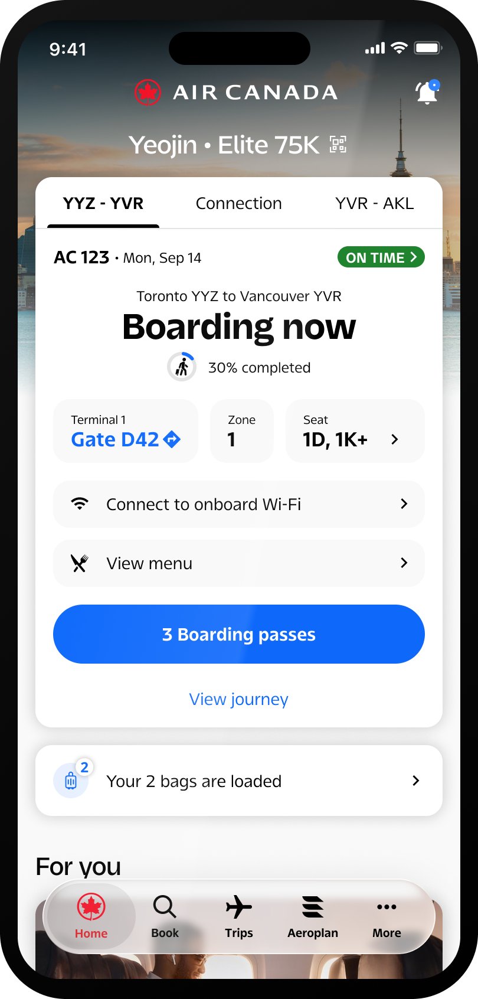
BOARDING SCREEN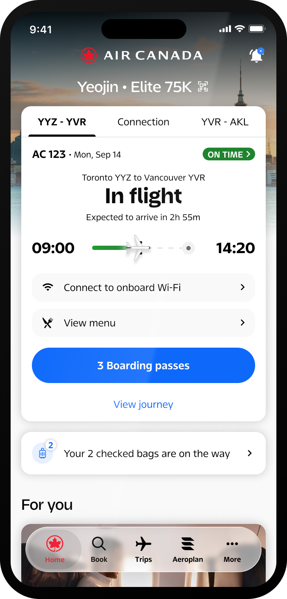
IN-FLIGHT SCREEN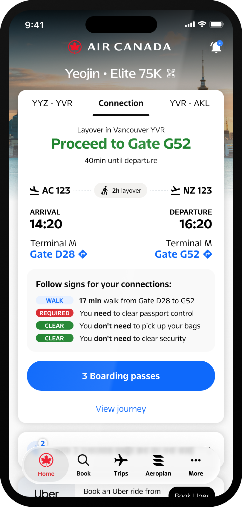
CONNECTION SCREEN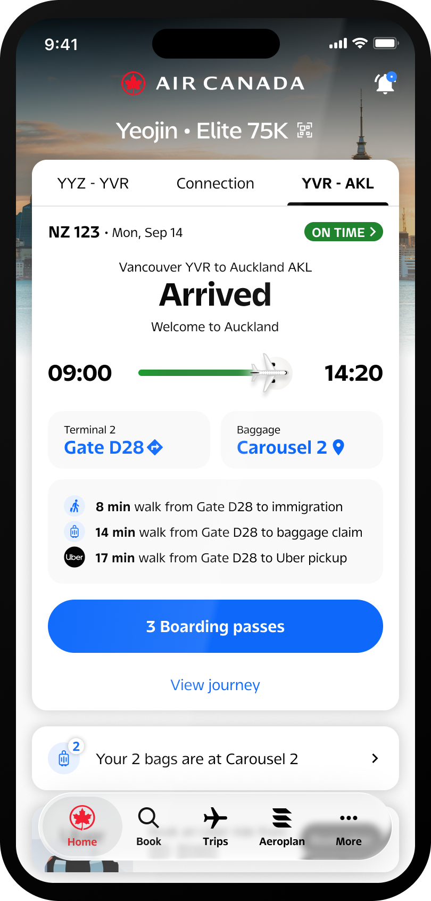
ARRIVED SCREENAs departure nears, Home leans into readiness and timing. When boarding starts, the immediate moment and its actions take the lead. Once onboard, the hierarchy shifts again around the current flight.
Connection is where the system has to think across segments, not treat each flight as an isolated booking. The next flight becomes the priority, and with it, gate, immigration, security, walking time. “Proceed to Gate G52” is simple on the surface. Behind it, Home is deciding what is relevant now.
After landing, attention leaves the flight and moves to the next stage of the journey.
Designing for Context —
The Home hierarchy is not fixed. As the journey changes, the primary information can change, the primary action can change, supporting detail changes, and the snippet changes with the flight or segment in play.
Across states, Home may hold flight status, expected departure, gate, boarding status, connection, baggage, amenities, rebooking, a boarding pass, or check-in. The work is not to show all of that at once. It is to decide what Home should prioritize right now, and to keep the rest of the product’s complexity off the customer.
The product should manage the complexity. The customer should see the clarity.
When the Journey Changes —
Designing beyond the happy path
A contextual Home also has to respond when the trip does not go as planned: delayed, cancelled, rebooked. Hierarchy and messaging have to move with that change. If someone has been rebooked, that fact needs to be prominent: the new itinerary, not the old plan.
These states belong to the same system as boarding and arrival. They are not a separate product.
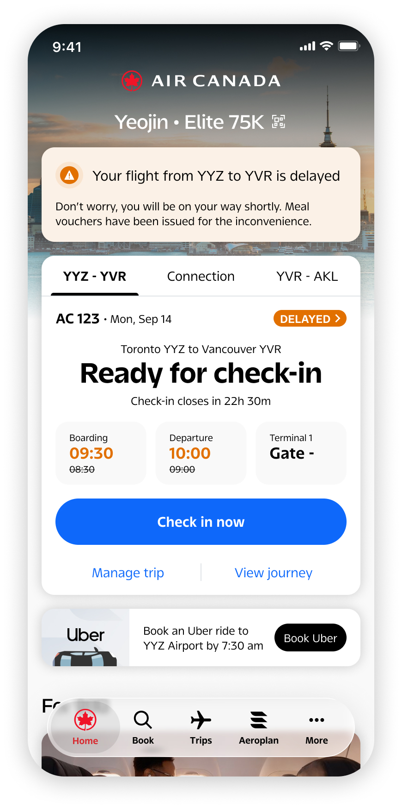
DELAYED SCREEN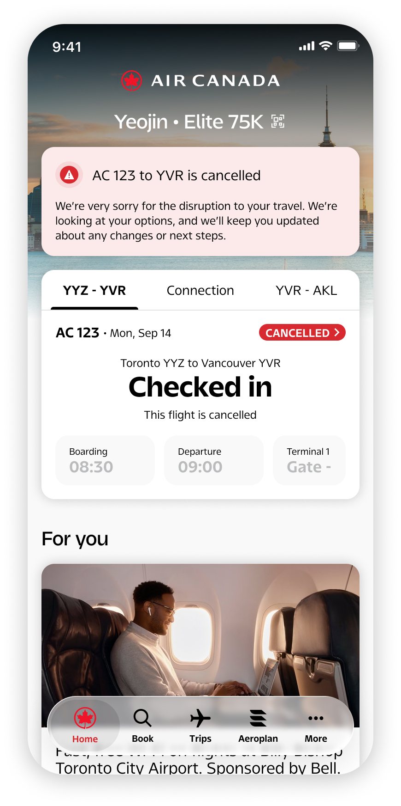
CANCELLED SCREEN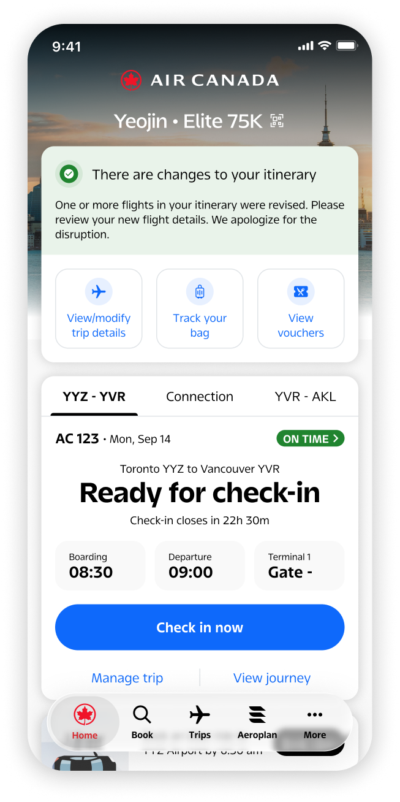
REBOOKED SCREENDesigning the System —
The work was not five screens. It was a system that could hold ten contextual states, multiple flight segments, connections, gates, boarding, in-flight context, arrival, baggage, disruptions, rebooking, contextual messaging, and the actions that belong to each moment, inside native mobile constraints, and in a way Engineering could implement.
The complexity was in the system. The experience needed to feel simple.
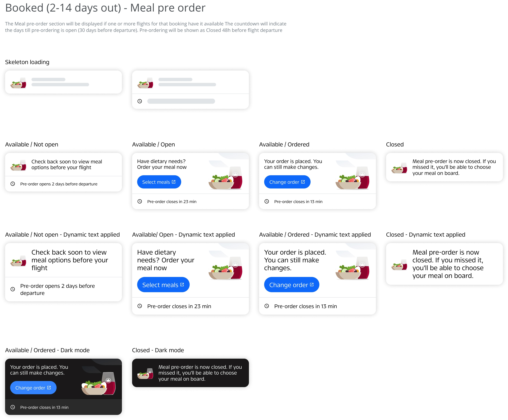
STATE TRANSITION / FLOWCollaboration —
The experience moved from concept to implementation through many rounds of iteration with Product, Engineering and QA. Feedback came from stakeholders and developers. The useful response was not to defend a frame, but to find the problem underneath the critique and refine the system.
Your design craft and persistence have been instrumental in getting this right.
You never treated a critique as a setback; you used it to make the design stronger.
Leadership recognized the quality of the 10 journey states, thoughtful handling of edge cases, and ability to balance competing perspectives.
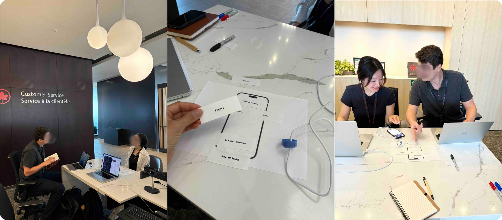
RECOGNITION / TEAM MOMENTHow We’ll Measure Impact —
Because the redesigned Home experience has only recently launched, it is too early to draw meaningful conclusions from post-launch data.
Rather than forcing an early metric into the story, I defined how the experience should create value and what signals we can use to evaluate it over time.
Contextual engagement
Are customers engaging with information that is relevant to their current travel state?
Action completion
Are customers completing important travel actions directly from Home?
Reduced navigation
Can customers find important information and take action without unnecessary navigation?
Journey support
Does Home continue to support customers as they move from pre-trip through the airport, flight, connection, and arrival?
Firebase can provide early directional signals. One month of data is an initial read, not evidence of impact. Verified metrics can be added as meaningful trends emerge.
Outcome —
Home has evolved from a static destination into a contextual travel companion that adapts to the customer’s journey.
The result is not simply a new Home screen. It is a system designed to keep answering one question: what does this customer need right now?
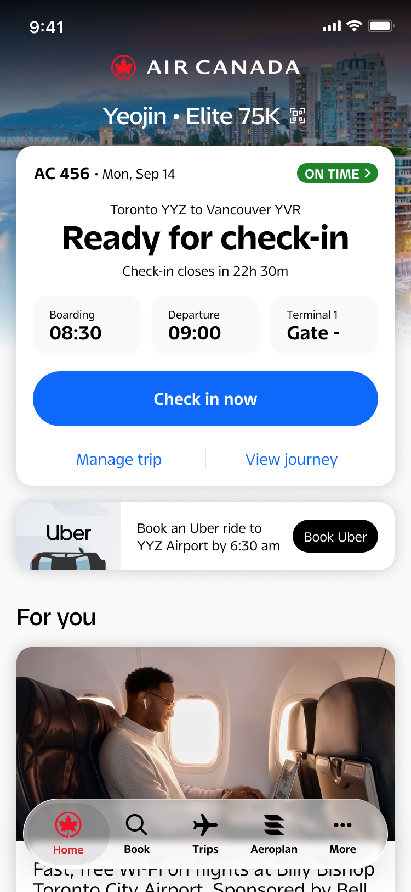
FINAL UI DETAILReflection —
This project reinforced something I believe strongly about digital product design: complexity does not need to disappear from the product. It needs to be managed by the product.
The best travel experience isn’t necessarily the one that gives customers more information. It is the one that gives them the right information at the right moment.